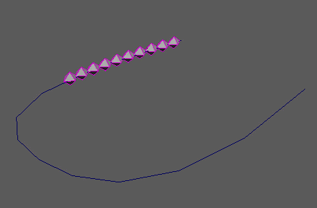

曲线

沿输入曲线分布 MASH 点并设置其动画。
曲线节点
输入曲线(Input Curves)
输入曲线(Input Curves)
显示沿其分布对象的当前曲线。
目标曲线(Aim Curve)
显示当前的目标曲线，这会影响对象的旋转。有助于防止对象沿曲线法线翻转。
变换空间(Transformation Space)
“局部”(Local)
可将传入点位置视为其初始状态。
步长(Step)
控制沿曲线分布点的间距。
动画(滑动) (Animation (slide))
控制点沿曲线移动的速度。表示为曲线长度的分数。
时间步变化(Time Step Variation)
控制添加到每个点的时间步的随机度量，从而有效随机化点的间距。
速度随机(Velocity Random)
随机化每个点的速度，使其随着时间的推移加快和减慢速度。
速度噪波(Velocity Noise)
更改
“速度随机”(Velocity Random)
属性的基础随机化。
噪波比例(Noise Scale)
缩放用于影响
“速度随机”(Velocity Random)
属性的噪波图案。
沿曲线偏移(Offset Along Curve)
用于沿曲线设置点动画的
“时间”(Time)
值。
片段开始(Clip Start)
、
片段结束(Clip End)
确定用于沿曲线设置点动画的
“时间”(Time)
比例（以百分比计）。
上方向向量(Up Vector)
在每个点上修改实例化对象的方向。
侧滚量(Roll Amount)
通过使用曲线法线定位对象来确定添加到对象动画的侧滚（自旋）量。用于在转弯处倾斜对象（例如，过山车）。
成比例计数(Proportional Counts)
确定连接多条曲线时点数是否受曲线长度影响。启用后，曲线越长，点数就越多。
相等间距(Equal Spacing)
均匀间隔点，而不考虑曲线长度。
曲线长度影响速度(Curve Length Affects Speed)
确定点沿各种长度曲线移动的速度。启用后，MASH 将沿长短曲线同步点速度。
忽略步骤(Ignore Step)
沿整条曲线均匀扩散点，而不考虑
“步长”(Step)
值。
计算旋转(Calculate Rotation)
启用后，将根据相应的 X 轴使实例化对象朝向曲线下方。
停止在曲线端点(Stop At Curve End)
启用后，点将在到达曲线终点时停止，而不是返回到起点。
强度
强度(Strength)
同时减弱对所有对象的节点效果。
随机强度(Random Strength)
按随机顺序平滑地减弱所有对象的节点效果。
阶跃强度(Step Strength)
每次禁用一个对象的节点效果。
强度贴图(Strength Map)
确定输入文件（2D 纹理、动画纹理等）来控制该节点的效果的形状。
贴图投影轴(Map Projection Axis)
确定投影
“强度贴图”(Strength Map)
时所沿的轴。
贴图辅助对象(Map Helper)
显示用于在场景中交互放置
“强度贴图”(Strength Map)
的对象。可以在该字段上单击鼠标右键来创建新的辅助对象（平面）（如果不存在）。还可以使用鼠标中键将网格拖入此字段，或者单击鼠标右键连接选定网格。如果网格已连接，还可以单击鼠标右键来断开其连接或者将其显示在大纲视图中。
注：
为获得最佳结果，请将相同的纹理指定给
“强度贴图”(Strength Map)
和
“贴图辅助对象”(Map Helper)
（在创建新的辅助对象时将自动执行此操作）。
父主题：
MASH 节点概述